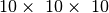

Build a mesh¶
As a preliminary, you may want to read this short introduction to the GetFEM++ vocabulary.
GetFEM++ has its own structure to store meshes defined in the files getfem/bgeot_mesh_structure.h and getfem/getfem_mesh.h. The main structure is defined in getfem/getfem_mesh.h by the object getfem::mesh.
This object is able to store any element in any dimension even if you mix elements with different dimensions.
There is only a (very) experimental meshing procedure in GetFEM++ to mesh complex geometries. But you can easily load a mesh from any format (some procedures are in getfem/getfem_import.h to load meshes from some public domain mesh generators).
The structure getfem::mesh may also contain a description about a region of the mesh, such as a boundary or a set of elements. This is handled via a container of convexes and convex faces, getfem::mesh_region.
Add an element to a mesh¶
Suppose the variable mymesh has been declared by:
getfem::mesh mymesh;
then you have two ways to insert a new element to this mesh: from a list of points or from a list of indexes of already existing points.
To enter a new point on a mesh use the method:
i = mymesh.add_point(pt);
where pt is of type bgeot::base_node. The index i is the index of this point on the mesh. If the point already exists in the mesh, a new point is not inserted and the index of the already existing point is returned. A mesh has a principal dimension, which is the dimension of its points. It is not possible to have points of different dimensions in a same mesh.
The most basic function to add a new element to a mesh is:
j = mymesh.add_convex(pgt, it);
This is a template function, with pgt of type bgeot::pgeometric_trans (basically a pointer to an instance of type bgeot::geometric_trans) and it is an iterator on a list of indexes of already existing points. For instance, if one needs to add a new triangle in a 3D mesh, one needs to define first an array with the indexes of the three points:
std::vector<bgeot::size_type> ind(3);
ind[0] = mymesh.add_point(bgeot::base_node(0.0, 0.0, 0.0));
ind[1] = mymesh.add_point(bgeot::base_node(0.0, 1.0, 0.0));
ind[2] = mymesh.add_point(bgeot::base_node(0.0, 0.0, 1.0));
then adding the element is done by:
mymesh.add_convex(bgeot::simplex_geotrans(2,1), ind.begin());
where bgeot::simplex_geotrans(N,1); denotes the usual linear geometric transformation for simplices of dimension N.
For simplices, a more specialized function exists, which is:
mymesh.add_simplex(2, ind.begin());
It is also possible to give directly the list of points with the function:
mymesh.add_convex_by_points(pgt, itp);
where now itp is an iterator on an array of points. For example:
std::vector<bgeot::base_node> pts(3);
pts[0] = bgeot::base_node(0.0, 0.0, 0.0);
pts[1] = bgeot::base_node(0.0, 1.0, 0.0);
pts[2] = bgeot::base_node(0.0, 0.0, 1.0);
mymesh.add_convex_by_points(bgeot::simplex_geotrans(2,1), pts.begin());
It is possible to use also:
mymesh.add_simplex_by_points(2, pts.begin());
For other elements than simplices, it is still possible to use mymesh.add_convex_by_points or mymesh.add_convex with the appropriate geometric transformation.
- bgeot::parallelepiped_geotrans(N, 1) describes the usual transformation for parallelepipeds of dimension N (quadrilateron for N=2, hexahedron for N=3, ...)
- bgeot::prism_geotrans(N, 1) describes the usual transformation for prisms of dimension N (usual prism is for N=3. A generalized prism is the product of a simplex of dimension N-1 with a segment)
Specialized functions exist also:
mymesh.add_parallelepiped(N, it);
mymesh.add_parallelepiped_by_points(N, itp);
mymesh.add_prism(N, it);
mymesh.add_prism_by_points(N, itp);
The order of the points in the array of points is not important for simplices (except if you care about the orientation of your simplices). For other elements, it is important to respect the vertex order shown in Vertex numeration for usual first order elements (first order elements).
{kind=link}
Vertex numeration for usual first order elements
Note that a general rule, including for higher order transformations, is that the vertex numeration follows the one of the corresponding Lagrange finite element method (see Appendix A. Finite element method list).
Remove an element from a mesh¶
To remove an element from a mesh, simply use:
mymesh.sup_convex(i);
where i is the index of the element.
Simple structured meshes¶
For parallelepiped domains, it is possible to obtain structured meshes with simplices, parallelepipeds or prisms elements from three functions defined in getfem/getfem_regular_meshes.h.
The simplest function to use is:
void regular_unit_mesh(mesh& m, std::vector<size_type> nsubdiv,
bgeot::pgeometric_trans pgt, bool noised = false);
which fills the mesh m with a regular mesh of simplices/parallelepipeds/prisms (depending on the value of pgt). The number of cells in each direction is given by nsubdiv. The following example builds a mesh of quadratic triangles on the unit square (the mesh can be scaled and translated afterwards):
std::vector<getfem::size_type> nsubdiv(2);
nsubdiv[0] = 10; nsubdiv[1] = 20;
regular_unit_mesh(m, nsubdiv, bgeot::simplex_geotrans(2,2));
More specialized regular mesh functions are also available:
getfem::parallelepiped_regular_simplex_mesh(mymesh, N, org, ivect, iref);
getfem::parallelepiped_regular_prism_mesh(mymesh, N, org, ivect, iref);
getfem::parallelepiped_regular_pyramid_mesh(mymesh, N, org, ivect, iref);
getfem::parallelepiped_regular_mesh(mymesh, N, org, ivect, iref);
where mymesh is a mesh variable in which the structured mesh will be built, N is the dimension (limited to 4 for simplices, 5 for prisms, unlimited for parallelepipeds), org is of type bgeot::base_node and represents the origin of the mesh, ivect is an iterator on an array of N vectors to build the parallelepiped domain, iref is an iterator on an array of N integers representing the number of division on each direction.
For instance, to build a mesh with tetrahedrons for a unit cube with  cells one can write:
getfem::mesh mymesh;
bgeot::base_node org(0.0, 0.0, 0.0);
std::vector<bgeot::base_small_vector> vect(3);
vect[0] = bgeot::base_small_vector(0.1, 0.0, 0.0);
vect[1] = bgeot::base_small_vector(0.0, 0.1, 0.0);
vect[2] = bgeot::base_small_vector(0.0, 0.0, 0.1);
std::vector<int> ref(3);
ref[0] = ref[1] = ref[2] = 10;
getfem::parallelepiped_regular_simplex_mesh(mymesh, 3, org, vect.begin(), ref.begin());
ノート
base_node and base_small_vector are almost identical, they are both ‘’small’’ vector classes (they cannot store more than 16 elements), used to describe geometrical points, and geometrical vectors. Their memory footprint is lower than a std::vector.
Mesh regions¶
A mesh object can contain many getfem::mesh_region objects (declaration in getfem/getfem_mesh_region.h). These objects are containers for a set of convexes and convex faces. They are used to define boundaries, or a partition of the mesh for parallel solvers, etc.:
mymesh.region(30).add(2); // adds convex 2 into region 30
mymesh.region(30).add(3); // adds convex 3 into region 30
mymesh.region(30).add(4,3); // adds face 3 of convex 4 into region 30
mymesh.region(30).sup(3); // Removes convex 3 from region 30
mymesh.sup_convex(4); // Removes convex 4 from both the mesh and all the regions
for (getfem::mr_visitor i(mymesh.region(30)); !i.finished(); ++i) {
cout << "convex: " << i.cv() << " face:" << i.f() << endl;
}
Methods of the getfem::mesh object¶
The list is not exhaustive.
- mymesh.dim()¶
main dimension of the mesh.
- mymesh.points_index()¶
gives a dal::bit_vector object which represents all the indexes of valid points of a mesh (see below).
- mymesh.points()[i]
gives the point of index i (a bgeot::base_node).
- mymesh.convex_index()¶
gives a dal::bit_vector object which represents all the indexes of valid elements of a mesh (see below).
- mymesh.structure_of_convex(i)¶
gives the description of the structure of element of index i. The function return a bgeot::pconvex_structure.
- mymesh.structure_of_convex(i)->nb_faces()
number of faces of element of index i.
- mymesh.structure_of_convex(i)->nb_points()
number of vertices of element of index i.
- mymesh.structure_of_convex(i)->dim()
intrinsic dimension of element of index i.
- mymesh.structure_of_convex(i)->nb_points_of_face(f)
number of vertices of the face of local index f of element of index i.
- mymesh.structure_of_convex(i)->ind_points_of_face(f)
return a container with the local indexes of all vertices of the face of local index f of element of index i. For instance mesh.structure_of_convex(i)->ind_points_of_face(f)[0] is the local index of the first vertex.
- mymesh.structure_of_convex(i)->face_structure(f)
gives the structure (a bgeot::pconvex_structure) of local index f of element of index i.
- mymesh.ind_points_of_convex(i)¶
gives a container with the global indexes of vertices of element of index i.
- mymesh.points_of_convex(i)¶
gives a container with the vertices of element of index i. This is an array of bgeot::base_node.
- mymesh.convex_to_point(ipt)¶
gives a container with the indexes of all elements attached to the point of global index ipt.
- mymesh.neighbours_of_convex(ic, f)¶
gives a container with the indexes of all elements in mesh having the common face of local index f of element ic except element ic.
- mymesh.neighbour_of_convex(ic, f)¶
gives the index of the first elements in mesh having the common face of local index f of element ic except element ic. return size_type(-1) if none is found.
- mymesh.is_convex_having_neighbour(ic, f)¶
return whether or not the element ic has a neighbour with respect to its face of local index f.
- mymesh.clear()¶
delete all elements and points from the mesh.
- mymesh.optimize_structure()¶
compact the structure (renumbers points and convexes such that there is no hole in their numbering).
- mymesh.trans_of_convex(i)¶
return the geometric transformation of the element of index i (in a bgeot::pgeometric_trans). See Description of the Project for more details about geometric transformations.
- mymesh.normal_of_face_of_convex(ic, f, pt)¶
gives a bgeot::base_small_vector representing an outward normal to the element at the face of local index f at the point of local coordinates (coordinates in the element of reference) pt. The point pt has no influence if the geometric transformation is linear. This is not a unit normal, the norm of the resulting vector is the ratio between the surface of the face of the reference element and the surface of the face of the real element.
- mymesh.convex_area_estimate(ic)¶
gives an estimate of the area of convex ic.
- mymesh.convex_quality_estimate(ic)¶
gives a rough estimate of the quality of element ic.
- mymesh.convex_radius_estimate(ic)¶
gives an estimate of the radius of element ic.
- mymesh.region(irg)¶
return a getfem::mesh_region. The region is stored in the mesh, and can contain a set of convex numbers and or convex faces.
- mymesh.has_region(irg)¶
returns true if the region of index irg has been created.
The methods of the convexes/convex faces container getfem::mesh_region are:
- add(ic)¶
add the convex of index ic to the region.
- add(ic, f)
add the face number f of the convex ic.
- sup(ic)¶
- sup(ic, f)
remove the convex or the convex face from the region.
- is_in(ic)¶
- is_in(ic, f)
return true if the convex (or convex face) is in the region.
- is_only_faces()¶
return true if the region does not contain any convex.
- is_only_convexes()¶
return true if the region does not contain any convex face.
- index()¶
return a dal::bit_vector containing the list of convexes which are stored (or whose faces are stored) in the region.
Iteration over a getfem::mesh_region should be done with getfem::mr_visitor:
getfem::mesh_region &rg = mymesh.region(2);
for (getfem::mr_visitor i(rg); !i.finished(); ++i) {
cout << "contains convex " < < i.cv();
if (i.is_face()) cout << "face " << i.f() << endl;
}
Using dal::bit_vector¶
The object dal::bit_vector (declared in getfem/dal_bit_vector.h) is a structure heavily used in GetFEM++. It is very close to std::bitset and std::vector<bool> but with additional functionalities to represent a set of non negative integers and iterate over them.
If nn is declared to be a dal::bit_vector, the two instructions nn.add(6) or nn[6] = true are equivalent and means that integer 6 is added to the set.
In a same way nn.sup(6) or nn[6] = false remove the integer 6 from the set. The instruction nn.add(6, 4) adds 6,7,8,9 to the set.
To iterate on a dal::bit_vector, it is possible to use iterators as usual, but, most of the time, as this object represents a set of integers, one just wants to iterate on the integers included into the set. The simplest way to do that is to use the pseudo-iterator dal::bv_visitor.
For instance, here is the code to iterate on the points of a mesh and print it to the standard output:
for (dal::bv_visitor i(mymesh.points_index()); !i.finished(); ++i)
cout << "Point of index " << i << " of the mesh: " << mymesh.points()[i] << endl;
Face numbering¶
The numeration of faces on usual elements is given in figure faces numeration for usual elements.
{kind=link}
faces numeration for usual elements
Note that, while the convexes and the points are globally numbered in a getfem::mesh object, there is no global numbering of the faces, so the only way to refer to a given face, is to give the convex number, and the local face number in the convex.
Save and load meshes¶
From GetFEM++ file format¶
In getfem/getfem_mesh.h, two methods are defined to load meshes from file and write meshes to a file.
- mymesh.write_to_file(const std::string &name)¶
save the mesh into a file.
- mymesh.read_from_file(const std::string &name)¶
load the mesh from a file.
The following is an example of how to load a mesh and extract information on it:
#include <getfem/getfem_mesh.h>
getfem::mesh mymesh;
int main(int argc, char *argv[]) {
try {
// read the mesh from the file name given by the first argument
mymesh.read_from_file(std::string(argv[1]));
// List all the convexes
dal::bit_vector nn = mymesh.convex_index();
bgeot::size_type i;
for (i << nn; i != bgeot::size_type(-1); i << nn) {
cout << "Convex of index " << i << endl;
bgeot::pconvex_structure cvs = mymesh.structure_of_convex(i);
cout << "Number of vertices: " << cvs->nb_points() << endl;
cout << "Number of faces: " << cvs->nb_faces() << endl;
for (bgeot::short_type f = 0; f < cvs->nb_faces(); ++f) {
cout << "face " << f << " has " << cvs->nb_points_of_face(f);
cout << " vertices with local indexes: ";
for (bgeot::size_type k = 0; k < cvs->nb_points_of_face(f); ++k)
cout << cvs->ind_points_of_face(f)[k] << " ";
cout << " and global indexes: ";
for (bgeot::size_type k = 0; k < cvs->nb_points_of_face(f); ++k)
cout << mymesh.ind_points_of_convex(i)[cvs->ind_points_of_face(f)[k]] << " ";
}
}
} GMM_STANDARD_CATCH_ERROR; // catches standard errors
}
Import a mesh¶
The file getfem/getfem_import.h provides the function:
void import_mesh(const std::string& fmtfilename, mesh& m);
Here the string fmtfilename must contain a descriptor of the file format (“gid”, “gmsh”, “cdb”, “noboite”, “am_fmt”, “emc2_mesh”, or “structured”), followed by a colon and the file name (if there is not format descriptor, it is assumed that the file is a native getfem mesh and the mesh::read_from_file() method is used). Example:
getfem::mesh m;
getfem::import_mesh("gid:../tests/meshes/tripod.GiD.msh",m);
Alternatively the function:
void import_mesh(const std::string& filename, const std::string& fmt,
mesh& m);
can be used in an equivalent manner with the string fmt being one of the aforementioned format specifiers.
The “gid” format specifier is for meshes generated by GiD and “gmsh” is for meshes generated by the open-source mesh generator Gmsh. The “cdb” format specifier is for reading meshes from ANSYS models exported in blocked format with the CDWRITE command. Currently the ANSYS element types 42,45,73,82,87,89,90,92,95,162,182,183,185,186,187 and 191 can be imported, this however does not include any finite element techology linked to these elements but only their geometry. The “noboite” format is for TetMesh-GHS3D, and the “am_fmt” and “emc2_mesh” are for files built with EMC2 (but 2D only).
The “structured” format is just a short specification for regular meshes: the rest of fmtfilename in that case is not a filename, but a string whose format is following:
getfem::import_mesh("structured:GT='GT_PK(2,1)';"
"NSUBDIV=[5,5];"
"ORG=[0,0];"
"SIZES=[1,1];"
"NOISED=0", m);
where GT is the name of the geometric transformation, NSUBDIV a vector of the number of subdivisions in each coordinate (default value 2), ORG is the origin of the mesh (default value [0,0,...]), SIZES is a vector of the sizes in each direction (default value [1, 1, ...] and if NOISED=1 the nodes of the interior of the mesh are randomly “shaken” (default value NOISED=0). In that string, all the parameters are optional except GT.

目次
前のトピックへ
次のトピックへ
Build a finite element method on a mesh
Download
Main documentations
- GetFEM++ User documentation
- Python Interface
- Matlab Interface
- Scilab Interface
- Gmm++
- GetFEM++ project